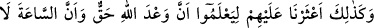
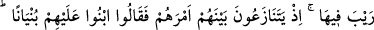
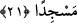

Osman Mağribî “Âriflerle beraberlik yumuşaklıkla (lutf ile), müridlerle berâberlik ise
sertlikledir.” demiştir.
Ey ma‘rifet ehli “onlar eğer size muttali olurlarsa,” sizde gördükleri velâyet
genişliği ve gücü, iki cihanda tasarruf gücünü hak etme ve iki cihanın sizin üzerinizde
tasarrufunun olmaması konusunda sizi yermek sûretiyle “ya sizi taşlayarak
öldürürler”; çünkü onlar kendisiyle sizin hallerinizi müşâhede edecekleri basîretten
mahrumdurlar. Kısır görüşlü olduklarından sizi ayıplarlar.
Aşk her gönülde ki senin için bir dert hânesi binâ eder,
O evin temelini melâmet taşından koyar.
“Veya kendi dinlerine çevirirler ki,” hevâ ve heves putlarına, dünyâ şehvetleri ve
ziynetleri Firavunlarına tapmaya, onlara kul köle olmaya teşvik ederler. Şâyet siz de
bunlara meyl ederseniz “o zaman ebediyyen iflâh olmazsınız.”
Fakir (Bursevî) der ki: Bil ki her asırda sûreten ve mânen Dakyanus benzeri zorbalar
bulunur. Kim bedeninde, dîninde, amelinde, inancında ve ırzında selâmet isterse onu
vahdette; insanlardan ayrı durmakta, evine sığınmakta ve uyuyan kimse gibi insanların
büyüğünün-küçüğünün, yükseğinin-alçağının hallerine muttali olmaktan sakınmakta
arayıp bulsun. Çünkü uyuyan kimsenin hisleri elinden alınmıştır. Dünyayı ve onda
olanları duymaz. Gözleri kapalı olduğu için siyahı beyazı ayıramaz. Birisi, kendisinin
değişmeyen bir deniz olduğunu iddiâ ederse bu sırf bir aldanmadır. Çünkü değişmemek
ancak nihâyete erenler için söz konusudur. İnsanların içine karışmakta çok zarar vardır.
Çünkü bu, kişinin tabîatını değiştiren süt emme gibidir. Bunun sonu ise hevâ ehlinin
yaptıklarına isteyerek ya da istemeyerek râzı olmak, muvafakat etmektir. Bu hâle
düşmekten Allah’a sığınırız. O’ndan helâk olacağımız durumlara düşmekten bizi
korumasını niyaz ederiz. O’ndan ebedî felâh ve sürekli kurtuluş dileriz.
21. Böylece (insanları) onlardan haberdar ettik ki, Allah’ın vaadinin hak
olduğunu, kıyâmetin şüphe götürmez olduğunu bilsinler. Hani onlar aralarında
Ashâb-ı Kehfin durumunu tartışıyorlardı. Dediler ki: “Üzerlerine bir bina yapın.
Rableri onları daha iyi bilir.” Onların durumuna vâkıf olanlar ise: “Bizler, kesinlikle
onların yanıbaşlarına bir mescit yapacağız” dediler.